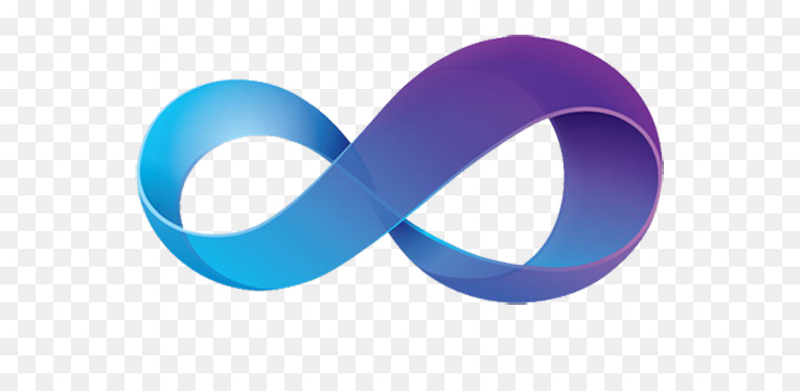

Logo> |
Lenguaje de programación |
Descripción |
Link | |
|---|---|---|---|---|
Java |
Java es un lenguaje de programación y una plataforma informática comercializada por primera vez en 1995 por Sun Microsystems | Java | ||
C |
El lenguaje C es un lenguaje estructurado, en el mismo sentido que lo son otroslenguajes de programación tales como el lenguaje Pascal, el Ada o el Modula-2, perono es estructurado por bloques, o sea, no es posible declarar subrutinas (pequeñostrozos de programa) dentro de otras subrutinas, a diferencia de como sucede con otroslenguajes estructurados tales como el Pascal | C | ||
Python |
Python es un lenguaje de scripting independiente de plataforma y orientado a objetos, preparado para realizar cualquier tipo de programa, desde aplicaciones Windows a servidores de red o incluso, páginas web. | Python | ||
C# |
C# es un lenguaje de programación desarrollado por Microsoft, orientado a objetos, que ha sido diseñado para compilar diversas aplicaciones que se ejecutan en .NET Framework. Se trata de un lenguaje simple, eficaz y con seguridad de tipos . Las numerosas innovaciones de C# permiten desarrollar aplicaciones rápidamente y mantener la expresividad y elegancia de los lenguajes de estilo de C. | C# | ||
C++ |
C++ es un lenguaje de programación que proviene de la extensión del lenguaje C para que pudiese manipular objetos. A pesar de ser un lenguaje con muchos años, su gran potencia lo convierte en uno de los lenguajes de programación más demandados en 2019. | C++ | ||

| Visual Basic.NET |
Visual Basic .NET es un lenguaje de programación orientado a objetos que cuenta con los beneficios que le brinda .NET Framework, el modelo de programación diseñado para simplificar la programación de aplicaciones en un entorno sumamente distribuido: Internet. El lenguaje Visual Basic .NET es totalmente diferente a sus antecesores, permite crear aplicaciones de escritorio, Web y móviles. Brinda un completo número de características para hacer que el desarrollo de aplicaciones sea realmente rápido. | VB.NET | |
JavaScript |
JavaScript es un lenguaje de programación o de secuencias de comandos que te permite implementar funciones complejas en páginas web, cada vez que una página web hace algo más que sentarse allí y mostrar información estática para que la veas, muestra oportunas actualizaciones de contenido, mapas interactivos, animación de Gráficos 2D/3D, desplazamiento de máquinas reproductoras de vídeo, etc. | JavaScript | ||
PHP |
PHP (acrónimo recursivo de PHP: Hypertext Preprocessor) es un lenguaje de código abierto muy popular especialmente adecuado para el desarrollo web y que puede ser incrustado en HTML. | PHP | ||
SWIFT |
Swift es un lenguaje de programación multiparadigma creado por Apple enfocado en el desarrollo de aplicaciones para iOS y macOS. | SWIFT | ||
SQL |
El Lenguaje de Consulta Estructurado popularmente conocido por sus siglas en inglés como SQL, es un tipo de lenguaje de programación que ayuda a solucionar problemas específicos o relacionados con la definición, manipulación e integridad de la información representada por los datos que se almacenan en las bases de datos. | SQL | ||
Ruby |
Un lenguaje de programación dinámico y de código abierto enfocado en la simplicidad y productividad. Su elegante sintaxis se siente natural al leerla y fácil al escribirla. | Ruby |